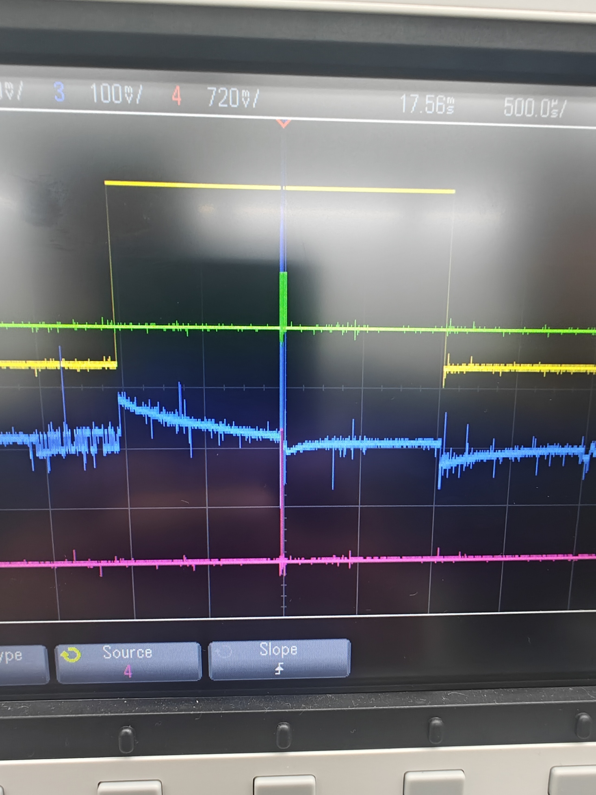
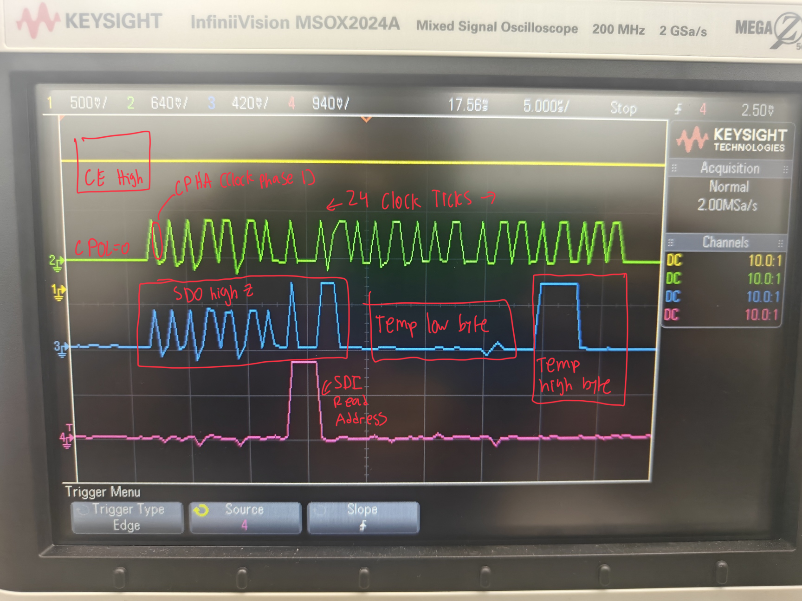
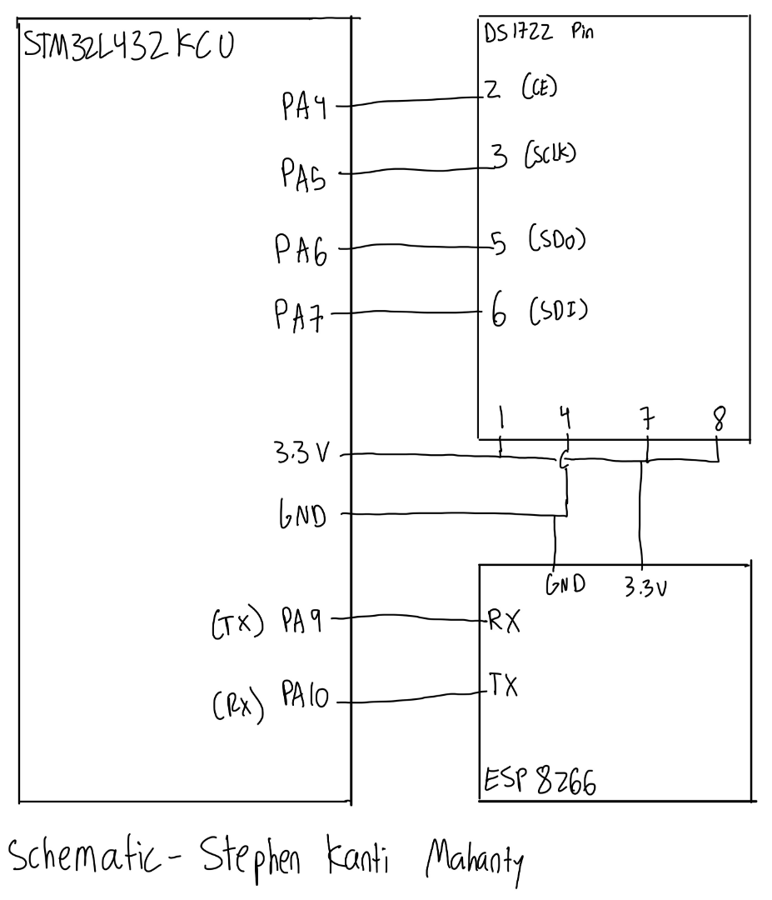

Lab 6
The following is the lab report for lab 6 for Stephen Kanti Mahanty.
Introduction
Using communication protocols to interface with a temperature sensor and an LED.
In this lab, a design was implemented on the MCU to demonstrate the use of communication protocols to interface with a temperature sensor and an LED. The design utilized SPI communication to read data from the temperature sensor and UART to control the LED via a webpage.
Design and Testing Methodology
Explaining how I approached the design of this assignment from both a software and a hardware standpoint (as appropriate). Include how I tested the design.
Most the design required reading the datasheets to understand how communication protocols work. I was able to use various datasheets to understand how to implement the SPI and UART protocols. I used SPI to read data from the temperature sensor, and UART to send data to a webpage to control the LED. I tested the design by using an oscilloscope verify that the SPI communication was working correctly.
Part of the lab required me to know how to turn bits on and off using SPI as well as sending data using MISO and MOSI whilst learning about clock polarities and chip enables. I also learned about UART and how to send data using the TX and RX pins. I was able to use a webpage to control the LED by sending data over UART.
The implementation of the webpage was done using HTML. The webpage was able to send data to the MCU using UART, which would then control the LED. The webpage also displayed the temperature data read from the sensor using SPI. The temperature data read was displayed in three resolutions that one can alternate with.
Technical Documentation:
Includes the link to a Git repository with the Verilog code, an oscilloscope reading, and schematics of the circuits.
The source code for the project can be found in the associated Github repository.
Flow Charts
Click to reveal trace

Click to reveal trace

The top image is the main oscilloscope reading of the design. This showed the chip enable (top), the clock (second), the SDO (third), and the SDI (bottom). The bottom image is the zoomed in version, which shows the data being sent and received. The oscilloscope reading shows that the SPI communication is working correctly, as the data being sent and received matches the expected values.
Schematic
Click to reveal schematic

Figure 3 shows the physical layout of the design. It shows logic gates and connections between all the inputs and outputs.
Results and Discussion
Did you accomplish all of the prescribed tasks? If not, what are the shortcomings? How might you address them given more time? As appropriate, how did the design perform (e.g., How fast/accurate/reliable was it?).
I did accomplish all of the prescribed tasks. The design successfully displayed temperature data from the sensor and allowed for control of the LED via the webpage. The SPI communication was reliable and accurate, as verified by the oscilloscope readings. The UART communication also performed well, allowing for smooth control of the LED.
I think lab 5 is better, since it relied more on the datasheet and also was more intuitive to understand. Lab 6 was more complex and required more time to understand the communication protocols. Given more time, I would have liked to implement additional features on the webpage, such as displaying the temperature data in a graph format or adding more controls for the LED.
Conclusion
Briefly summarize what was done and how it performed. Also note how many hours you spent working on the lab.
The design successfully displayed temperature data from the sensor and allowed for control of the LED via the webpage. The SPI communication was reliable and accurate, as verified by the oscilloscope readings. The UART communication also performed well, allowing for smooth control of the LED. I spent a total of fourteen hours working on this lab.
AI Prototype Summary
I asked Google’s Gemini. It gave out the following:
Click to reveal AI Summary 1
<!DOCTYPE html>
<html lang="en" class="dark">
<head>
<meta charset="UTF-8">
<meta name="viewport" content="width=device-width, initial-scale=1.0">
<title>THERMO-LINK // IoT Gateway & Sensor Controller</title>
<!-- Tailwind CSS CDN -->
<script src="https://cdn.tailwindcss.com"></script>
<script>
tailwind.config = {
darkMode: 'class',
theme: {
extend: {
colors: {
darkbg: '#090d16',
cardbg: 'rgba(17, 24, 39, 0.75)',
borderglow: 'rgba(56, 189, 248, 0.15)',
accent: {
cyan: '#06b6d4',
blue: '#3b82f6',
rose: '#f43f5e',
amber: '#f59e0b',
emerald: '#10b981'
}
},
fontFamily: {
sans: ['Inter', 'sans-serif'],
mono: ['JetBrains Mono', 'Fira Code', 'monospace']
}
}
}
}
</script>
<!-- Google Fonts & FontAwesome -->
<link rel="preconnect" href="https://fonts.googleapis.com">
<link rel="preconnect" href="https://fonts.gstatic.com" crossorigin>
<link href="https://fonts.googleapis.com/css2?family=Inter:wght@300;400;500;600;700&family=JetBrains+Mono:wght@400;500;700&display=swap" rel="stylesheet">
<link rel="stylesheet" href="https://cdnjs.cloudflare.com/ajax/libs/font-awesome/6.4.0/css/all.min.css">
<style>
body {
background-color: #090d16;
background-image:
radial-gradient(at 10% 10%, rgba(6, 182, 212, 0.08) 0px, transparent 50%),
radial-gradient(at 90% 90%, rgba(59, 130, 246, 0.08) 0px, transparent 50%),
radial-gradient(at 50% 50%, rgba(139, 92, 246, 0.05) 0px, transparent 50%);
background-attachment: fixed;
font-family: 'Inter', sans-serif;
color: #f3f4f6;
}
.glass-panel {
background: rgba(17, 24, 39, 0.7);
backdrop-filter: blur(16px);
-webkit-backdrop-filter: blur(16px);
border: 1px solid rgba(255, 255, 255, 0.08);
box-shadow: 0 8px 32px 0 rgba(0, 0, 0, 0.37);
}
.glass-panel:hover {
border-color: rgba(56, 189, 248, 0.25);
}
/* LED Animation Effects */
@keyframes led-breathe {
0%, 100% { opacity: 0.2; transform: scale(0.96); filter: drop-shadow(0 0 5px var(--led-color)); }
50% { opacity: 1.0; transform: scale(1.04); filter: drop-shadow(0 0 30px var(--led-color)); }
}
@keyframes led-strobe {
0%, 49% { opacity: 1.0; filter: drop-shadow(0 0 35px var(--led-color)); }
50%, 100% { opacity: 0.05; filter: drop-shadow(0 0 2px var(--led-color)); }
}
.led-mode-breathe {
animation: led-breathe 2.5s infinite ease-in-out;
}
.led-mode-strobe {
animation: led-strobe 0.15s infinite steps(1);
}
/* Custom Scrollbars */
::-webkit-scrollbar {
width: 6px;
height: 6px;
}
::-webkit-scrollbar-track {
background: rgba(15, 23, 42, 0.6);
}
::-webkit-scrollbar-thumb {
background: rgba(56, 189, 248, 0.25);
border-radius: 3px;
}
::-webkit-scrollbar-thumb:hover {
background: rgba(56, 189, 248, 0.5);
}
/* Range Slider Styling */
input[type=range] {
-webkit-appearance: none;
background: rgba(30, 41, 59, 0.8);
border-radius: 8px;
height: 6px;
}
input[type=range]::-webkit-slider-thumb {
-webkit-appearance: none;
height: 18px;
width: 18px;
border-radius: 50%;
background: #06b6d4;
cursor: pointer;
box-shadow: 0 0 10px rgba(6, 182, 212, 0.7);
border: 2px solid #ffffff;
transition: all 0.15s ease;
}
input[type=range]::-webkit-slider-thumb:hover {
transform: scale(1.15);
box-shadow: 0 0 15px rgba(6, 182, 212, 1);
}
/* Gauge Arc styling */
.gauge-bg {
stroke: rgba(255, 255, 255, 0.07);
stroke-linecap: round;
}
.gauge-value {
stroke-linecap: round;
transition: stroke-dashoffset 0.4s ease, stroke 0.4s ease;
}
</style>
</head>
<body class="min-h-screen flex flex-col justify-between selection:bg-cyan-500 selection:text-black">
<!-- TOP NAVIGATION BAR -->
<header class="sticky top-0 z-40 glass-panel border-b border-slate-800/80 px-4 lg:px-8 py-3.5">
<div class="max-w-7xl mx-auto flex flex-col sm:flex-row items-center justify-between gap-4">
<!-- Brand Logo & Device Info -->
<div class="flex items-center space-x-3 w-full sm:w-auto justify-between sm:justify-start">
<div class="flex items-center space-x-3">
<div class="p-2.5 rounded-xl bg-cyan-500/10 border border-cyan-500/30 text-cyan-400 shadow-lg shadow-cyan-500/10">
<i class="fa-solid fa-microchip text-xl"></i>
</div>
<div>
<div class="flex items-center space-x-2">
<h1 class="font-bold text-lg tracking-wide text-white">THERMO-LINK</h1>
<span class="text-[10px] uppercase tracking-wider font-mono bg-cyan-500/20 text-cyan-300 border border-cyan-500/30 px-2 py-0.5 rounded-full">v2.4 IoT</span>
</div>
<p class="text-xs text-slate-400 font-mono">ESP32-S3 Dual-Core // IP: 192.168.1.105</p>
</div>
</div>
<!-- Mobile Quick Status -->
<div class="sm:hidden flex items-center space-x-2">
<span id="connectionBadgeMobile" class="inline-flex items-center px-2 py-1 rounded-full text-xs font-mono bg-emerald-500/10 text-emerald-400 border border-emerald-500/20">
<span class="w-2 h-2 rounded-full bg-emerald-400 animate-ping mr-1.5"></span> LIVE
</span>
</div>
</div>
<!-- Header Controls & Telemetry Quick Stats -->
<div class="flex items-center space-x-3 w-full sm:w-auto justify-end">
<!-- Wifi Signal -->
<div class="hidden md:flex items-center space-x-2 px-3 py-1.5 rounded-lg bg-slate-800/50 border border-slate-700/50 text-xs font-mono text-slate-300">
<i class="fa-solid fa-wifi text-cyan-400"></i>
<span>RSSI: -58 dBm</span>
</div>
<!-- Simulation Toggle -->
<button id="toggleConnectionBtn" onclick="toggleConnection()" class="flex items-center space-x-2 px-3.5 py-1.5 rounded-lg text-xs font-semibold tracking-wide transition-all duration-200 bg-emerald-500/10 text-emerald-400 border border-emerald-500/30 hover:bg-emerald-500/20">
<span class="relative flex h-2.5 w-2.5">
<span id="statusPulse" class="animate-ping absolute inline-flex h-full w-full rounded-full bg-emerald-400 opacity-75"></span>
<span id="statusDot" class="relative inline-flex rounded-full h-2.5 w-2.5 bg-emerald-500"></span>
</span>
<span id="connectionText" class="font-mono">ONLINE</span>
</button>
<!-- Code Generator Modal Trigger -->
<button onclick="openCodeModal()" class="flex items-center space-x-2 px-3.5 py-1.5 rounded-lg text-xs font-medium bg-slate-800 hover:bg-slate-700 text-slate-200 border border-slate-700 transition-all duration-200 hover:border-cyan-500/50">
<i class="fa-solid fa-code text-cyan-400"></i>
<span class="hidden sm:inline">C++ Firmware Code</span>
</button>
</div>
</div>
</header>
<!-- DYNAMIC ALERT BANNER -->
<div id="alertBanner" class="hidden max-w-7xl mx-auto px-4 mt-4 transition-all duration-300">
<div class="p-3.5 rounded-xl bg-rose-500/10 border border-rose-500/40 text-rose-200 flex items-center justify-between shadow-lg shadow-rose-950/40">
<div class="flex items-center space-x-3">
<div class="p-2 bg-rose-500/20 rounded-lg text-rose-400 animate-bounce">
<i class="fa-solid fa-triangle-exclamation text-lg"></i>
</div>
<div>
<div class="font-semibold text-sm text-rose-300" id="alertTitle">Temperature Alert Threshold Exceeded!</div>
<div class="text-xs text-rose-200/80 font-mono" id="alertMessage">Current reading is outside safety boundary.</div>
</div>
</div>
<button onclick="dismissAlert()" class="text-rose-400 hover:text-white px-2 py-1 text-sm rounded-lg hover:bg-rose-500/20">
<i class="fa-solid fa-xmark"></i>
</button>
</div>
</div>
<!-- MAIN CONTENT CONTAINER -->
<main class="max-w-7xl mx-auto px-4 py-6 space-y-6 flex-1 w-full">
<div class="grid grid-cols-1 lg:grid-cols-12 gap-6">
<!-- ================= LEFT COLUMN: PRIMARY TEMPERATURE READOUT & CHART (7 COLS) ================= -->
<div class="lg:col-span-7 space-y-6">
<!-- CARD 1: MAIN TEMPERATURE DISPLAY & CIRCULAR GAUGE -->
<div class="glass-panel rounded-2xl p-6 relative overflow-hidden transition-all duration-300">
<!-- Top Bar: Title & Unit Selector -->
<div class="flex items-center justify-between mb-6">
<div class="flex items-center space-x-2.5">
<span class="w-3 h-3 rounded-full bg-cyan-400 shadow-lg shadow-cyan-500/50"></span>
<h2 class="text-sm uppercase tracking-wider font-semibold text-slate-300">Live Temperature Sensor</h2>
</div>
<!-- Unit Switcher Tabs -->
<div class="flex items-center bg-slate-900/80 p-1 rounded-xl border border-slate-800 text-xs font-medium font-mono">
<button id="unitBtnC" onclick="setUnit('C')" class="px-3 py-1 rounded-lg transition-all text-cyan-400 bg-cyan-500/20 border border-cyan-500/30 font-bold">°C</button>
<button id="unitBtnF" onclick="setUnit('F')" class="px-3 py-1 rounded-lg transition-all text-slate-400 hover:text-white">°F</button>
<button id="unitBtnK" onclick="setUnit('K')" class="px-3 py-1 rounded-lg transition-all text-slate-400 hover:text-white">K</button>
</div>
</div>
<!-- Circular Gauge Arc & Digital Display -->
<div class="relative flex flex-col items-center justify-center my-2">
<!-- SVG Circular Gauge -->
<div class="relative w-64 h-64 sm:w-72 sm:h-72 flex items-center justify-center">
<svg class="w-full h-full transform -rotate-90" viewBox="0 0 200 200">
<!-- Background Track Arc -->
<circle class="gauge-bg" cx="100" cy="100" r="82" stroke-width="14" fill="none" stroke-dasharray="386" stroke-dashoffset="128" />
<!-- Animated Value Arc -->
<circle id="gaugeArc" class="gauge-value" cx="100" cy="100" r="82" stroke-width="14" fill="none"
stroke="url(#gaugeGradient)" stroke-dasharray="515" stroke-dashoffset="250" />
<!-- Arc Gradient Definition -->
<defs>
<linearGradient id="gaugeGradient" x1="0%" y1="0%" x2="100%" y2="100%">
<stop offset="0%" stop-color="#06b6d4" />
<stop offset="40%" stop-color="#10b981" />
<stop offset="75%" stop-color="#f59e0b" />
<stop offset="100%" stop-color="#f43f5e" />
</linearGradient>
</defs>
</svg>
<!-- Center Readout Callout -->
<div class="absolute inset-0 flex flex-col items-center justify-center text-center">
<span id="trendBadge" class="text-[11px] font-mono px-2.5 py-0.5 rounded-full bg-emerald-500/10 text-emerald-400 border border-emerald-500/20 mb-1">
<i class="fa-solid fa-arrow-trend-up mr-1"></i>STABLE
</span>
<!-- Main Big Temperature Digits -->
<div class="flex items-baseline justify-center tracking-tight font-mono my-0.5">
<span id="mainTempDisplay" class="text-4xl sm:text-5xl font-bold text-white drop-shadow-md">24.15</span>
<span id="mainUnitDisplay" class="text-xl sm:text-2xl font-semibold text-cyan-400 ml-1">°C</span>
</div>
<div class="text-xs text-slate-400 font-mono mt-1" id="calibratedRawText">
Calibrated: <span id="calibratedVal" class="text-slate-200">24.15°C</span>
</div>
</div>
</div>
</div>
<!-- Temperature Statistics Bar Grid -->
<div class="grid grid-cols-3 gap-3 mt-6 pt-5 border-t border-slate-800/80 font-mono">
<div class="bg-slate-900/60 p-3 rounded-xl border border-slate-800/80 text-center">
<div class="text-[10px] uppercase text-slate-400 tracking-wider mb-0.5">Minimum</div>
<div class="text-sm font-semibold text-cyan-400" id="statMin">--</div>
</div>
<div class="bg-slate-900/60 p-3 rounded-xl border border-slate-800/80 text-center">
<div class="text-[10px] uppercase text-slate-400 tracking-wider mb-0.5">Average</div>
<div class="text-sm font-semibold text-emerald-400" id="statAvg">--</div>
</div>
<div class="bg-slate-900/60 p-3 rounded-xl border border-slate-800/80 text-center">
<div class="text-[10px] uppercase text-slate-400 tracking-wider mb-0.5">Maximum</div>
<div class="text-sm font-semibold text-rose-400" id="statMax">--</div>
</div>
</div>
</div>
<!-- CARD 2: REAL-TIME TELEMETRY LINE CHART -->
<div class="glass-panel rounded-2xl p-6 relative">
<div class="flex flex-col sm:flex-row items-start sm:items-center justify-between gap-3 mb-4">
<div class="flex items-center space-x-2">
<i class="fa-solid fa-chart-line text-cyan-400"></i>
<h3 class="text-sm font-semibold uppercase tracking-wider text-slate-300">Live Temperature History</h3>
</div>
<!-- Chart Time Window Selector & Clear Button -->
<div class="flex items-center space-x-2 w-full sm:w-auto justify-between sm:justify-end">
<div class="flex items-center bg-slate-900/80 p-0.5 rounded-lg border border-slate-800 text-xs font-mono">
<button onclick="setChartWindow(30)" class="px-2.5 py-1 rounded-md text-cyan-400 bg-slate-800">30s</button>
<button onclick="setChartWindow(60)" class="px-2.5 py-1 rounded-md text-slate-400 hover:text-white">1m</button>
<button onclick="setChartWindow(180)" class="px-2.5 py-1 rounded-md text-slate-400 hover:text-white">3m</button>
</div>
<button onclick="clearChartData()" class="p-1.5 rounded-lg text-slate-400 hover:text-rose-400 hover:bg-rose-500/10 transition-colors text-xs" title="Reset Chart History">
<i class="fa-solid fa-arrow-rotate-left"></i>
</button>
</div>
</div>
<!-- Canvas Element -->
<div class="relative h-60 w-full">
<canvas id="tempChart" class="w-full h-full block"></canvas>
</div>
<div class="flex items-center justify-between text-[11px] font-mono text-slate-400 mt-3 pt-2 border-t border-slate-800/60">
<div class="flex items-center space-x-4">
<span class="flex items-center"><span class="w-2.5 h-0.5 bg-cyan-400 inline-block mr-1.5"></span> Reading</span>
<span class="flex items-center"><span class="w-2.5 h-0.5 bg-rose-500 border-dashed border-t border-rose-500 inline-block mr-1.5"></span> High Threshold</span>
<span class="flex items-center"><span class="w-2.5 h-0.5 bg-blue-500 border-dashed border-t border-blue-500 inline-block mr-1.5"></span> Low Threshold</span>
</div>
<div id="chartTooltip" class="text-cyan-300 font-semibold">Hover point for details</div>
</div>
</div>
</div>
<!-- ================= RIGHT COLUMN: PRECISION & LED CONTROLS (5 COLS) ================= -->
<div class="lg:col-span-5 space-y-6">
<!-- CARD 3: PRECISION & SENSOR CALIBRATION CONTROL -->
<div class="glass-panel rounded-2xl p-6 relative">
<div class="flex items-center space-x-2 mb-5">
<i class="fa-solid fa-sliders text-cyan-400"></i>
<h3 class="text-sm font-semibold uppercase tracking-wider text-slate-300">Precision & Sensor Tuning</h3>
</div>
<div class="space-y-5">
<!-- Decimal Precision Switcher -->
<div>
<div class="flex items-center justify-between mb-2">
<label class="text-xs font-medium text-slate-300">Readout Decimal Precision</label>
<span id="precisionBadge" class="text-xs font-mono text-cyan-400 bg-cyan-500/10 px-2 py-0.5 rounded border border-cyan-500/20">2 Decimals</span>
</div>
<div class="grid grid-cols-4 gap-2 font-mono text-xs">
<button onclick="setPrecision(0)" id="precBtn0" class="py-2 rounded-xl border border-slate-800 bg-slate-900/80 text-slate-400 hover:text-white transition-all">0 (24°)</button>
<button onclick="setPrecision(1)" id="precBtn1" class="py-2 rounded-xl border border-slate-800 bg-slate-900/80 text-slate-400 hover:text-white transition-all">1 (24.1°)</button>
<button onclick="setPrecision(2)" id="precBtn2" class="py-2 rounded-xl border border-cyan-500/40 bg-cyan-500/20 text-cyan-300 font-bold transition-all">2 (24.15°)</button>
<button onclick="setPrecision(3)" id="precBtn3" class="py-2 rounded-xl border border-slate-800 bg-slate-900/80 text-slate-400 hover:text-white transition-all">3 (24.153°)</button>
</div>
</div>
<!-- Calibration Offset Slider -->
<div class="pt-2">
<div class="flex items-center justify-between mb-1.5">
<label class="text-xs font-medium text-slate-300">Calibration Offset Adjustment</label>
<span id="offsetValDisplay" class="text-xs font-mono text-slate-200">0.0 °C</span>
</div>
<input type="range" id="offsetSlider" min="-5.0" max="5.0" step="0.1" value="0.0" oninput="updateCalibrationOffset(this.value)" class="w-full">
<div class="flex justify-between text-[10px] font-mono text-slate-500 mt-1">
<span>-5.0°C</span>
<button onclick="resetOffset()" class="text-cyan-400 hover:underline">Reset (0.0°C)</button>
<span>+5.0°C</span>
</div>
</div>
<!-- Sampling Interval Drodown -->
<div class="pt-2">
<div class="flex items-center justify-between mb-1.5">
<label class="text-xs font-medium text-slate-300">Sensor Sampling Interval</label>
<span class="text-xs font-mono text-slate-400" id="samplingText">1000 ms</span>
</div>
<select id="samplingSelect" onchange="updateSamplingInterval(this.value)" class="w-full bg-slate-900/90 border border-slate-800 text-xs font-mono rounded-xl p-2.5 text-slate-200 focus:outline-none focus:border-cyan-500 transition-colors">
<option value="500">500 ms (Fast Telemetry)</option>
<option value="1000" selected>1000 ms (Standard Default)</option>
<option value="2000">2000 ms (Eco Mode)</option>
<option value="5000">5000 ms (Low Power)</option>
</select>
</div>
<!-- Alert Threshold Adjusters -->
<div class="pt-3 border-t border-slate-800/80 grid grid-cols-2 gap-3">
<div>
<label class="text-[11px] text-slate-400 block mb-1">High Alert (°C)</label>
<input type="number" id="highThresholdInput" value="32.0" step="0.5" onchange="updateAlertThresholds()" class="w-full bg-slate-900 border border-rose-500/30 text-rose-300 text-xs font-mono rounded-lg p-2 focus:outline-none focus:border-rose-500">
</div>
<div>
<label class="text-[11px] text-slate-400 block mb-1">Low Alert (°C)</label>
<input type="number" id="lowThresholdInput" value="15.0" step="0.5" onchange="updateAlertThresholds()" class="w-full bg-slate-900 border border-blue-500/30 text-blue-300 text-xs font-mono rounded-lg p-2 focus:outline-none focus:border-blue-500">
</div>
</div>
</div>
</div>
<!-- CARD 4: MICROCONTROLLER RGB LED CONTROL PANEL -->
<div class="glass-panel rounded-2xl p-6 relative overflow-hidden">
<div class="flex items-center justify-between mb-5">
<div class="flex items-center space-x-2">
<i class="fa-solid fa-lightbulb text-amber-400"></i>
<h3 class="text-sm font-semibold uppercase tracking-wider text-slate-300">Microcontroller RGB LED</h3>
</div>
<!-- Master Power Toggle Button -->
<button id="ledPowerToggle" onclick="toggleLedPower()" class="flex items-center space-x-2 px-3 py-1 rounded-xl text-xs font-mono font-bold transition-all border bg-emerald-500/20 text-emerald-300 border-emerald-500/40">
<i class="fa-solid fa-power-off text-xs"></i>
<span id="ledPowerText">ON</span>
</button>
</div>
<!-- Visual Hardware LED Preview Bulb -->
<div class="flex items-center justify-center my-4 py-3 bg-slate-950/60 rounded-2xl border border-slate-800 relative">
<div class="flex flex-col items-center">
<!-- Glowing LED Lens -->
<div class="relative flex items-center justify-center">
<div id="ledBulbVisual" class="w-20 h-20 rounded-full border-2 border-white/20 transition-all duration-300 flex items-center justify-center"
style="background: #06b6d4; box-shadow: 0 0 35px #06b6d4; --led-color: #06b6d4;">
<div class="w-12 h-12 rounded-full bg-white/20 backdrop-blur-sm border border-white/30 flex items-center justify-center">
<i class="fa-solid fa-microchip text-slate-900/60 text-lg"></i>
</div>
</div>
</div>
<div class="text-[11px] font-mono text-slate-400 mt-3" id="ledStatusSubtext">Mode: <span class="text-cyan-400 font-bold">AUTO</span> • PWM: <span class="text-cyan-400" id="ledPwmVal">80%</span></div>
</div>
</div>
<!-- LED Mode Controls -->
<div class="space-y-4">
<div>
<label class="text-xs font-medium text-slate-300 block mb-2">LED Operating Mode</label>
<div class="grid grid-cols-2 gap-2 text-xs font-mono">
<button onclick="setLedMode('solid')" id="ledModeSolid" class="p-2 rounded-xl border border-slate-800 bg-slate-900/80 text-slate-400 hover:text-white transition-all text-left flex items-center space-x-2">
<i class="fa-solid fa-circle text-[10px]"></i>
<span>Solid</span>
</button>
<button onclick="setLedMode('breathe')" id="ledModeBreathe" class="p-2 rounded-xl border border-slate-800 bg-slate-900/80 text-slate-400 hover:text-white transition-all text-left flex items-center space-x-2">
<i class="fa-solid fa-wave-square text-[10px]"></i>
<span>Breathe</span>
</button>
<button onclick="setLedMode('strobe')" id="ledModeStrobe" class="p-2 rounded-xl border border-slate-800 bg-slate-900/80 text-slate-400 hover:text-white transition-all text-left flex items-center space-x-2">
<i class="fa-solid fa-bolt text-[10px]"></i>
<span>Strobe Alert</span>
</button>
<button onclick="setLedMode('auto')" id="ledModeAuto" class="p-2 rounded-xl border border-cyan-500/40 bg-cyan-500/20 text-cyan-300 font-bold transition-all text-left flex items-center space-x-2">
<i class="fa-solid fa-temperature-half text-[10px]"></i>
<span>Auto-Temp</span>
</button>
</div>
</div>
<!-- Brightness Slider -->
<div>
<div class="flex items-center justify-between mb-1">
<label class="text-xs font-medium text-slate-300">Brightness (PWM Duty Cycle)</label>
<span id="brightnessVal" class="text-xs font-mono text-cyan-400">80%</span>
</div>
<input type="range" id="brightnessSlider" min="0" max="100" value="80" oninput="updateBrightness(this.value)" class="w-full">
</div>
<!-- Color Picker & Swatches (Disabled in Auto-Temp mode) -->
<div id="colorPickerContainer" class="pt-2 border-t border-slate-800/80">
<div class="flex items-center justify-between mb-2">
<label class="text-xs font-medium text-slate-300">Target RGB Color</label>
<div class="flex items-center space-x-2">
<input type="color" id="ledColorPicker" value="#06b6d4" onchange="updateLedColor(this.value)" class="w-7 h-7 rounded-lg bg-transparent border-0 cursor-pointer">
<span id="colorHexText" class="text-xs font-mono text-slate-300 uppercase">#06B6D4</span>
</div>
</div>
<!-- Preset Swatches -->
<div class="flex items-center space-x-2 justify-between">
<button onclick="updateLedColor('#06b6d4')" class="w-7 h-7 rounded-lg bg-[#06b6d4] hover:scale-110 transition-transform shadow"></button>
<button onclick="updateLedColor('#3b82f6')" class="w-7 h-7 rounded-lg bg-[#3b82f6] hover:scale-110 transition-transform shadow"></button>
<button onclick="updateLedColor('#10b981')" class="w-7 h-7 rounded-lg bg-[#10b981] hover:scale-110 transition-transform shadow"></button>
<button onclick="updateLedColor('#f59e0b')" class="w-7 h-7 rounded-lg bg-[#f59e0b] hover:scale-110 transition-transform shadow"></button>
<button onclick="updateLedColor('#ef4444')" class="w-7 h-7 rounded-lg bg-[#ef4444] hover:scale-110 transition-transform shadow"></button>
<button onclick="updateLedColor('#a855f7')" class="w-7 h-7 rounded-lg bg-[#a855f7] hover:scale-110 transition-transform shadow"></button>
</div>
</div>
<!-- Auto-Temp Color Scale Legend (Shown when Auto Mode is active) -->
<div id="autoTempBar" class="p-2.5 rounded-xl bg-slate-900/80 border border-slate-800 text-[11px] space-y-1 font-mono">
<div class="text-slate-400 text-[10px] flex justify-between">
<span>Icy Cold (<18°C)</span>
<span>Ideal (22°C)</span>
<span>Hot (>30°C)</span>
</div>
<div class="h-2 rounded-full w-full bg-gradient-to-r from-blue-500 via-cyan-400 via-emerald-400 via-amber-400 to-rose-500"></div>
</div>
</div>
</div>
</div>
</div>
<!-- ================= BOTTOM ROW: TERMINAL / API INSPECTOR & HARDWARE LOGS ================= -->
<div class="glass-panel rounded-2xl p-6">
<div class="flex flex-col sm:flex-row items-start sm:items-center justify-between gap-4 mb-4">
<div class="flex items-center space-x-3">
<div class="p-2 rounded-lg bg-cyan-500/10 text-cyan-400 border border-cyan-500/20">
<i class="fa-solid fa-terminal text-sm"></i>
</div>
<div>
<h3 class="text-sm font-semibold uppercase tracking-wider text-slate-200">Hardware Telemetry Stream & API Log</h3>
<p class="text-xs text-slate-400 font-mono">Websocket JSON Telemetry Payload Inspector</p>
</div>
</div>
<div class="flex items-center space-x-2 font-mono text-xs w-full sm:w-auto justify-end">
<!-- Filter buttons -->
<div class="flex bg-slate-900 p-1 rounded-lg border border-slate-800">
<button onclick="setLogFilter('all')" id="filterAll" class="px-2.5 py-1 rounded bg-slate-800 text-cyan-400 font-bold">ALL</button>
<button onclick="setLogFilter('rx')" id="filterRx" class="px-2.5 py-1 rounded text-slate-400 hover:text-white">RX</button>
<button onclick="setLogFilter('tx')" id="filterTx" class="px-2.5 py-1 rounded text-slate-400 hover:text-white">TX</button>
</div>
<button onclick="clearTerminal()" class="px-3 py-1.5 rounded-lg bg-slate-800 hover:bg-slate-700 text-slate-300 border border-slate-700 transition-colors">
Clear
</button>
<button onclick="copyLatestJson()" class="px-3 py-1.5 rounded-lg bg-cyan-500/20 hover:bg-cyan-500/30 text-cyan-300 border border-cyan-500/30 transition-colors">
Copy Latest
</button>
</div>
</div>
<!-- Monospace Log Screen -->
<div id="terminalScreen" class="bg-slate-950/90 rounded-xl p-4 border border-slate-800 font-mono text-xs h-48 overflow-y-auto space-y-1.5 selection:bg-cyan-900">
<!-- Log entries inserted here dynamically -->
</div>
</div>
</main>
<!-- FOOTER -->
<footer class="border-t border-slate-800/80 py-4 px-4 text-center text-xs text-slate-500 font-mono">
<p>THERMO-LINK IoT Hardware Interface Gateway • Embedded WebSocket Server Port 8080 • Simulated MCU Active</p>
</footer>
<!-- C++ FIRMWARE CODE MODAL -->
<div id="codeModal" class="fixed inset-0 z-50 hidden bg-black/80 backdrop-blur-md flex items-center justify-center p-4">
<div class="glass-panel max-w-3xl w-full rounded-2xl border border-slate-700 shadow-2xl overflow-hidden flex flex-col max-h-[90vh]">
<!-- Modal Header -->
<div class="p-5 border-b border-slate-800 flex items-center justify-between bg-slate-900/60">
<div class="flex items-center space-x-3">
<i class="fa-solid fa-code text-cyan-400 text-lg"></i>
<div>
<h3 class="font-bold text-slate-200">ESP32 / Arduino C++ Firmware Snippet</h3>
<p class="text-xs text-slate-400 font-mono">Matching API endpoint payload structures for WebServer & WS</p>
</div>
</div>
<button onclick="closeCodeModal()" class="text-slate-400 hover:text-white p-2 text-lg">
<i class="fa-solid fa-xmark"></i>
</button>
</div>
<!-- Modal Content (Code Viewer) -->
<div class="p-5 overflow-y-auto flex-1 font-mono text-xs bg-slate-950 text-slate-300">
<div class="flex justify-between items-center mb-2">
<span class="text-slate-500">// Arduino C++ code matching web portal JSON payloads</span>
<button onclick="copyFirmwareCode()" id="copyCodeBtn" class="px-3 py-1 rounded bg-cyan-500/20 text-cyan-300 border border-cyan-500/40 hover:bg-cyan-500/30">
<i class="fa-regular fa-copy mr-1"></i> Copy Code
</button>
</div>
<pre><code id="firmwareCodeBlock" class="text-cyan-200/90">
/*
* THERMO-LINK IoT Gateway ESP32 Firmware
* Hardware Pinout:
* - Temperature Sensor (DS18B20 / DHT22): GPIO 4
* - RGB LED PWM Pins: Red (GPIO 16), Green (GPIO 17), Blue (GPIO 18)
*/
#include <WiFi.h>
#include <AsyncTCP.h>
#include <ESPAsyncWebServer.h>
#include <ArduinoJson.h>
#include <OneWire.h>
#include <DallasTemperature.h>
const char* ssid = "YOUR_WIFI_SSID";
const char* password = "YOUR_WIFI_PASSWORD";
#define ONE_WIRE_BUS 4
OneWire oneWire(ONE_WIRE_BUS);
DallasTemperature sensors(&oneWire);
AsyncWebServer server(80);
AsyncWebSocket ws("/ws");
// State Variables
float calibrationOffset = 0.0;
int readoutPrecision = 2;
bool ledPower = true;
int ledBrightness = 80;
String ledMode = "auto";
uint32_t ledColor = 0x06B6D4;
void handleWebSocketMessage(void *arg, uint8_t *data, size_t len) {
AwsFrameInfo *info = (AwsFrameInfo*)arg;
if (info->final && info->index == 0 && info->len == len && info->opcode == WS_TEXT) {
DynamicJsonDocument doc(1024);
deserializeJson(doc, data);
if (doc.containsKey("command")) {
String cmd = doc["command"];
if (cmd == "SET_LED") {
ledPower = doc["power"];
ledBrightness = doc["brightness"];
ledMode = doc["mode"].as<String>();
// Update PWM pins according to brightness and color...
} else if (cmd == "SET_CALIBRATION") {
calibrationOffset = doc["offset"];
readoutPrecision = doc["precision"];
}
}
}
}
void setup() {
Serial.begin(115200);
sensors.begin();
WiFi.begin(ssid, password);
while (WiFi.status() != WL_CONNECTED) { delay(500); }
ws.onEvent([](AsyncWebSocket *server, AsyncWebSocketClient *client, AwsEventType type, void *arg, uint8_t *data, size_t len) {
if (type == WS_EVT_DATA) handleWebSocketMessage(arg, data, len);
});
server.addHandler(&ws);
server.begin();
}
void loop() {
sensors.requestTemperatures();
float rawC = sensors.getTempCByIndex(0);
float calibratedC = rawC + calibrationOffset;
DynamicJsonDocument telemetry(512);
telemetry["sensor_id"] = "DS18B20_01";
telemetry["temp_c"] = rawC;
telemetry["calibrated_c"] = calibratedC;
telemetry["precision"] = readoutPrecision;
String jsonString;
serializeJson(telemetry, jsonString);
ws.textAll(jsonString);
delay(1000);
}
</code></pre>
</div>
</div>
</div>
<!-- JAVASCRIPT LOGIC & SIMULATION ENGINE -->
<script>
const state = {
connected: true,
unit: 'C', // 'C', 'F', 'K'
precision: 2, // 0, 1, 2, 3 decimal places
offset: 0.0, // ±5.0 °C offset calibration
samplingInterval: 1000, // ms
highThreshold: 32.0, // °C
lowThreshold: 15.0, // °C
baseAmbient: 24.15, // °C initial base temperature
noiseDrift: 0.0,
// LED State
led: {
power: true,
brightness: 80, // 0 - 100 %
mode: 'auto', // 'solid', 'breathe', 'strobe', 'auto'
color: '#06b6d4' // RGB Hex
},
// Historical Data Buffer
chartWindowSec: 30,
history: [], // Array of { timestamp, tempC }
stats: {
min: null,
max: null,
avg: null,
sum: 0,
count: 0
},
// Log Filters
logFilter: 'all', // 'all', 'rx', 'tx'
logs: []
};
let timerId = null;
let chartInstance = null;
// Convert base Celsius value to selected unit
function convertTemp(celsiusVal, targetUnit = state.unit) {
const valWithOffset = celsiusVal + state.offset;
if (targetUnit === 'F') {
return (valWithOffset * 9 / 5) + 32;
} else if (targetUnit === 'K') {
return valWithOffset + 273.15;
}
return valWithOffset; // 'C'
}
// Format numerical temperature according to precision and active unit
function formatVal(celsiusVal, dec = state.precision, targetUnit = state.unit) {
const converted = convertTemp(celsiusVal, targetUnit);
return converted.toFixed(dec);
}
function getUnitSymbol(u = state.unit) {
if (u === 'F') return '°F';
if (u === 'K') return 'K';
return '°C';
}
// Update visual circular SVG gauge arc and digits
function updateGaugeDisplay(currentTempC) {
const displayValStr = formatVal(currentTempC);
const displayUnitStr = getUnitSymbol();
document.getElementById('mainTempDisplay').innerText = displayValStr;
document.getElementById('mainUnitDisplay').innerText = displayUnitStr;
document.getElementById('calibratedVal').innerText = formatVal(currentTempC, state.precision, 'C') + '°C';
// Calculate percentage across standard working range (-10°C to +50°C)
const minRangeC = -10;
const maxRangeC = 50;
let percentage = (currentTempC - minRangeC) / (maxRangeC - minRangeC);
percentage = Math.max(0, Math.min(1, percentage));
// Circumference of radius 82 circle = 2 * PI * 82 = ~515
// Arc covers 270 degrees (3/4 of circle), so active path length = 386 max
const maxDashOffset = 515 - (percentage * 386);
document.getElementById('gaugeArc').style.strokeDashoffset = maxDashOffset;
// Trend indicator calculation
const trendBadge = document.getElementById('trendBadge');
if (state.history.length > 3) {
const recentDiff = currentTempC - state.history[state.history.length - 3].tempC;
if (recentDiff > 0.08) {
trendBadge.innerHTML = `<i class="fa-solid fa-arrow-trend-up mr-1"></i>RISING`;
trendBadge.className = 'text-[11px] font-mono px-2.5 py-0.5 rounded-full bg-rose-500/10 text-rose-400 border border-rose-500/20 mb-1';
} else if (recentDiff < -0.08) {
trendBadge.innerHTML = `<i class="fa-solid fa-arrow-trend-down mr-1"></i>FALLING`;
trendBadge.className = 'text-[11px] font-mono px-2.5 py-0.5 rounded-full bg-blue-500/10 text-blue-400 border border-blue-500/20 mb-1';
} else {
trendBadge.innerHTML = `<i class="fa-solid fa-minus mr-1"></i>STABLE`;
trendBadge.className = 'text-[11px] font-mono px-2.5 py-0.5 rounded-full bg-emerald-500/10 text-emerald-400 border border-emerald-500/20 mb-1';
}
}
}
// Calculate RGB color based on temp for Auto mode
function computeAutoTempColor(tempC) {
if (tempC < 18) {
return '#3b82f6'; // Cold Blue
} else if (tempC < 24) {
return '#06b6d4'; // Cool Cyan
} else if (tempC < 28) {
return '#10b981'; // Ideal Emerald
} else if (tempC < 33) {
return '#f59e0b'; // Warm Amber
} else {
return '#ef4444'; // Hot Crimson
}
}
// Update the visual representation of the RGB LED bulb
function updateLedVisuals(currentTempC) {
const bulb = document.getElementById('ledBulbVisual');
const subtext = document.getElementById('ledStatusSubtext');
const colorHexElem = document.getElementById('colorHexText');
const pickerElem = document.getElementById('ledColorPicker');
if (!bulb || !subtext) return;
if (!state.led.power) {
bulb.style.background = '#1e293b';
bulb.style.boxShadow = '0 0 5px rgba(0,0,0,0.5)';
bulb.className = 'w-20 h-20 rounded-full border-2 border-white/10 transition-all duration-300 flex items-center justify-center opacity-40';
subtext.innerHTML = 'Status: <span class="text-rose-400 font-bold">DISABLED (0%)</span>';
return;
}
let effectiveColor = state.led.color;
if (state.led.mode === 'auto') {
effectiveColor = computeAutoTempColor(currentTempC);
}
const opacityRatio = state.led.brightness / 100;
const spreadPx = Math.round(20 + (state.led.brightness * 0.35));
bulb.style.setProperty('--led-color', effectiveColor);
bulb.style.background = effectiveColor;
bulb.style.boxShadow = `0 0 ${spreadPx}px ${effectiveColor}`;
// Apply Mode Animation Classes
let animationClass = '';
if (state.led.mode === 'breathe') {
animationClass = 'led-mode-breathe';
} else if (state.led.mode === 'strobe') {
animationClass = 'led-mode-strobe';
}
bulb.className = `w-20 h-20 rounded-full border-2 border-white/30 transition-all duration-300 flex items-center justify-center ${animationClass}`;
if (colorHexElem) colorHexElem.innerText = effectiveColor.toUpperCase();
if (pickerElem) pickerElem.value = effectiveColor;
subtext.innerHTML = `Mode: <span class="text-cyan-400 font-bold">${state.led.mode.toUpperCase()}</span> • PWM: <span class="text-cyan-400" id="ledPwmVal">${state.led.brightness}%</span>`;
}
function initChart() {
const canvas = document.getElementById('tempChart');
const ctx = canvas.getContext('2d');
function resizeCanvas() {
const rect = canvas.getBoundingClientRect();
canvas.width = rect.width * window.devicePixelRatio;
canvas.height = rect.height * window.devicePixelRatio;
ctx.scale(window.devicePixelRatio, window.devicePixelRatio);
}
resizeCanvas();
window.addEventListener('resize', resizeCanvas);
// Canvas interactive mouse hover handler
canvas.addEventListener('mousemove', (e) => {
const rect = canvas.getBoundingClientRect();
const mouseX = e.clientX - rect.left;
if (state.history.length < 2) return;
const stepX = rect.width / (Math.max(state.history.length - 1, 1));
const index = Math.min(Math.max(Math.round(mouseX / stepX), 0), state.history.length - 1);
const pt = state.history[index];
if (pt) {
const formatted = formatVal(pt.tempC);
const unit = getUnitSymbol();
const timeStr = new Date(pt.timestamp).toLocaleTimeString();
document.getElementById('chartTooltip').innerText = `[${timeStr}] ${formatted} ${unit}`;
}
});
}
function renderChart() {
const canvas = document.getElementById('tempChart');
if (!canvas) return;
const ctx = canvas.getContext('2d');
const rect = canvas.getBoundingClientRect();
const w = rect.width;
const h = rect.height;
ctx.clearRect(0, 0, w, h);
if (state.history.length < 2) return;
// Compute Y-axis bounds dynamically around current history
const tempsConverted = state.history.map(d => convertTemp(d.tempC));
let minVal = Math.min(...tempsConverted);
let maxVal = Math.max(...tempsConverted);
// Add padding
const pad = (maxVal - minVal) * 0.2 || 2.0;
minVal -= pad;
maxVal += pad;
const getY = (val) => h - ((val - minVal) / (maxVal - minVal)) * (h - 20) - 10;
const stepX = w / (state.history.length - 1);
// Draw Background Gridlines
ctx.strokeStyle = 'rgba(255, 255, 255, 0.05)';
ctx.lineWidth = 1;
for (let y = 10; y < h; y += 40) {
ctx.beginPath();
ctx.moveTo(0, y);
ctx.lineTo(w, y);
ctx.stroke();
}
// Draw Threshold Dotted Lines
const highY = getY(convertTemp(state.highThreshold));
const lowY = getY(convertTemp(state.lowThreshold));
ctx.setLineDash([4, 4]);
ctx.strokeStyle = 'rgba(244, 63, 94, 0.6)'; // High Red
ctx.beginPath(); ctx.moveTo(0, highY); ctx.lineTo(w, highY); ctx.stroke();
ctx.strokeStyle = 'rgba(59, 130, 246, 0.6)'; // Low Blue
ctx.beginPath(); ctx.moveTo(0, lowY); ctx.lineTo(w, lowY); ctx.stroke();
ctx.setLineDash([]); // Reset dash
// Draw Temperature Path
ctx.beginPath();
ctx.moveTo(0, getY(tempsConverted[0]));
for (let i = 1; i < state.history.length; i++) {
const x = i * stepX;
const y = getY(tempsConverted[i]);
const prevX = (i - 1) * stepX;
const prevY = getY(tempsConverted[i - 1]);
const cx = (prevX + x) / 2;
ctx.bezierCurveTo(cx, prevY, cx, y, x, y);
}
ctx.strokeStyle = '#06b6d4';
ctx.lineWidth = 2.5;
ctx.stroke();
// Gradient Fill beneath curve
ctx.lineTo(w, h);
ctx.lineTo(0, h);
ctx.closePath();
const grad = ctx.createLinearGradient(0, 0, 0, h);
grad.addColorStop(0, 'rgba(6, 182, 212, 0.25)');
grad.addColorStop(1, 'rgba(6, 182, 212, 0.0)');
ctx.fillStyle = grad;
ctx.fill();
}
function tickSensor() {
if (!state.connected) return;
// Realistic random thermal noise + drift walk
state.noiseDrift += (Math.random() - 0.49) * 0.12;
state.noiseDrift = Math.max(-1.5, Math.min(1.5, state.noiseDrift));
const rawTempC = state.baseAmbient + state.noiseDrift;
const calibratedC = rawTempC + state.offset;
const now = Date.now();
state.history.push({ timestamp: now, tempC: calibratedC });
// Prune history based on active time window
const cutoff = now - (state.chartWindowSec * 1000);
state.history = state.history.filter(d => d.timestamp >= cutoff);
// Update Statistics
updateStats(calibratedC);
// UI Refresh Calls
updateGaugeDisplay(calibratedC);
updateLedVisuals(calibratedC);
renderChart();
// Alert Threshold Verification
checkAlertThresholds(calibratedC);
// Log JSON Telemetry Packet
logTelemetryPacket(rawTempC, calibratedC);
}
function updateStats(currentTempC) {
const s = state.stats;
if (s.min === null || currentTempC < s.min) s.min = currentTempC;
if (s.max === null || currentTempC > s.max) s.max = currentTempC;
s.sum += currentTempC;
s.count++;
s.avg = s.sum / s.count;
document.getElementById('statMin').innerText = formatVal(s.min) + getUnitSymbol();
document.getElementById('statAvg').innerText = formatVal(s.avg) + getUnitSymbol();
document.getElementById('statMax').innerText = formatVal(s.max) + getUnitSymbol();
}
function checkAlertThresholds(calibratedC) {
const banner = document.getElementById('alertBanner');
const title = document.getElementById('alertTitle');
const msg = document.getElementById('alertMessage');
if (calibratedC > state.highThreshold) {
banner.classList.remove('hidden');
title.innerText = 'HIGH TEMPERATURE WARNING!';
msg.innerText = `Current sensor readout (${formatVal(calibratedC)}${getUnitSymbol()}) exceeds safe max threshold (${formatVal(state.highThreshold)}${getUnitSymbol()}).`;
} else if (calibratedC < state.lowThreshold) {
banner.classList.remove('hidden');
title.innerText = 'LOW TEMPERATURE WARNING!';
msg.innerText = `Current sensor readout (${formatVal(calibratedC)}${getUnitSymbol()}) is below safe min threshold (${formatVal(state.lowThreshold)}${getUnitSymbol()}).`;
} else {
banner.classList.add('hidden');
}
}
function dismissAlert() {
document.getElementById('alertBanner').classList.add('hidden');
}
function logTelemetryPacket(rawC, calibratedC) {
const payload = {
sensor_id: "DS18B20_01",
timestamp: new Date().toISOString(),
raw_temp_c: Number(rawC.toFixed(4)),
calibrated_c: Number(calibratedC.toFixed(state.precision)),
unit: state.unit,
offset_applied: state.offset,
precision: state.precision
};
appendTerminalLog('RX', payload);
}
function logCommandPacket(commandName, details) {
const payload = {
command: commandName,
timestamp: new Date().toISOString(),
...details
};
appendTerminalLog('TX', payload);
}
function appendTerminalLog(type, jsonObj) {
const entry = {
type,
time: new Date().toLocaleTimeString() + '.' + String(Math.floor(Math.random() * 900) + 100),
json: JSON.stringify(jsonObj)
};
state.logs.push(entry);
if (state.logs.length > 50) state.logs.shift();
renderTerminalScreen();
}
function renderTerminalScreen() {
const screen = document.getElementById('terminalScreen');
screen.innerHTML = '';
const filtered = state.logs.filter(l => {
if (state.logFilter === 'all') return true;
return l.type.toLowerCase() === state.logFilter.toLowerCase();
});
filtered.forEach(item => {
const row = document.createElement('div');
const badgeColor = item.type === 'RX' ? 'text-emerald-400 bg-emerald-500/10 border-emerald-500/20' : 'text-cyan-400 bg-cyan-500/10 border-cyan-500/20';
row.className = 'flex items-start space-x-2 border-b border-slate-900/60 pb-1';
row.innerHTML = `
<span class="text-[10px] px-1.5 py-0.5 rounded border font-bold ${badgeColor}">${item.type}</span>
<span class="text-slate-500">${item.time}</span>
<span class="text-slate-300 break-all">${item.json}</span>
`;
screen.appendChild(row);
});
screen.scrollTop = screen.scrollHeight;
}
function setLogFilter(filter) {
state.logFilter = filter;
['All', 'Rx', 'Tx'].forEach(f => {
const btn = document.getElementById('filter' + f);
if (f.toLowerCase() === filter) {
btn.className = 'px-2.5 py-1 rounded bg-slate-800 text-cyan-400 font-bold';
} else {
btn.className = 'px-2.5 py-1 rounded text-slate-400 hover:text-white';
}
});
renderTerminalScreen();
}
function clearTerminal() {
state.logs = [];
renderTerminalScreen();
}
function copyLatestJson() {
if (state.logs.length === 0) return;
const latest = state.logs[state.logs.length - 1].json;
document.execCommand('copy');
alert('Latest JSON telemetry copied to clipboard!');
}
// Unit Switch Handler
function setUnit(unitKey) {
state.unit = unitKey;
['C', 'F', 'K'].forEach(u => {
const btn = document.getElementById('unitBtn' + u);
if (u === unitKey) {
btn.className = 'px-3 py-1 rounded-lg transition-all text-cyan-400 bg-cyan-500/20 border border-cyan-500/30 font-bold';
} else {
btn.className = 'px-3 py-1 rounded-lg transition-all text-slate-400 hover:text-white';
}
});
// Re-render display & stats with new unit
if (state.history.length > 0) {
const latestC = state.history[state.history.length - 1].tempC;
updateGaugeDisplay(latestC);
renderChart();
}
}
// Precision Switch Handler (0, 1, 2, 3 decimal places)
function setPrecision(dec) {
state.precision = dec;
document.getElementById('precisionBadge').innerText = `${dec} Decimal${dec !== 1 ? 's' : ''}`;
[0, 1, 2, 3].forEach(d => {
const btn = document.getElementById('precBtn' + d);
if (d === dec) {
btn.className = 'py-2 rounded-xl border border-cyan-500/40 bg-cyan-500/20 text-cyan-300 font-bold transition-all';
} else {
btn.className = 'py-2 rounded-xl border border-slate-800 bg-slate-900/80 text-slate-400 hover:text-white transition-all';
}
});
logCommandPacket('SET_PRECISION', { decimal_places: dec });
// Immediate UI Refresh
if (state.history.length > 0) {
const latestC = state.history[state.history.length - 1].tempC;
updateGaugeDisplay(latestC);
updateStats(latestC);
renderChart();
}
}
// Calibration Offset Adjuster
function updateCalibrationOffset(val) {
state.offset = parseFloat(val);
document.getElementById('offsetValDisplay').innerText = `${state.offset > 0 ? '+' : ''}${state.offset.toFixed(1)} °C`;
logCommandPacket('SET_CALIBRATION_OFFSET', { offset_c: state.offset });
}
function resetOffset() {
document.getElementById('offsetSlider').value = 0.0;
updateCalibrationOffset(0.0);
}
// Sampling Interval Adjuster
function updateSamplingInterval(msStr) {
state.samplingInterval = parseInt(msStr, 10);
document.getElementById('samplingText').innerText = `${state.samplingInterval} ms`;
clearInterval(timerId);
timerId = setInterval(tickSensor, state.samplingInterval);
logCommandPacket('SET_SAMPLING_INTERVAL', { interval_ms: state.samplingInterval });
}
// Alert Threshold Updater
function updateAlertThresholds() {
state.highThreshold = parseFloat(document.getElementById('highThresholdInput').value) || 32.0;
state.lowThreshold = parseFloat(document.getElementById('lowThresholdInput').value) || 15.0;
renderChart();
}
// LED Controls
function toggleLedPower() {
state.led.power = !state.led.power;
const btn = document.getElementById('ledPowerToggle');
const txt = document.getElementById('ledPowerText');
if (state.led.power) {
btn.className = 'flex items-center space-x-2 px-3 py-1 rounded-xl text-xs font-mono font-bold transition-all border bg-emerald-500/20 text-emerald-300 border-emerald-500/40';
txt.innerText = 'ON';
} else {
btn.className = 'flex items-center space-x-2 px-3 py-1 rounded-xl text-xs font-mono font-bold transition-all border bg-rose-500/20 text-rose-300 border-rose-500/40';
txt.innerText = 'OFF';
}
logCommandPacket('SET_LED_POWER', { power: state.led.power });
if (state.history.length > 0) updateLedVisuals(state.history[state.history.length - 1].tempC);
}
function setLedMode(modeKey) {
state.led.mode = modeKey;
['solid', 'breathe', 'strobe', 'auto'].forEach(m => {
const btnName = 'ledMode' + m.charAt(0).toUpperCase() + m.slice(1);
const btn = document.getElementById(btnName);
if (m === modeKey) {
btn.className = 'p-2 rounded-xl border border-cyan-500/40 bg-cyan-500/20 text-cyan-300 font-bold transition-all text-left flex items-center space-x-2';
} else {
btn.className = 'p-2 rounded-xl border border-slate-800 bg-slate-900/80 text-slate-400 hover:text-white transition-all text-left flex items-center space-x-2';
}
});
logCommandPacket('SET_LED_MODE', { mode: modeKey });
if (state.history.length > 0) updateLedVisuals(state.history[state.history.length - 1].tempC);
}
function updateBrightness(valStr) {
state.led.brightness = parseInt(valStr, 10);
document.getElementById('brightnessVal').innerText = `${state.led.brightness}%`;
logCommandPacket('SET_LED_BRIGHTNESS', { brightness: state.led.brightness });
if (state.history.length > 0) updateLedVisuals(state.history[state.history.length - 1].tempC);
}
function updateLedColor(hexVal) {
state.led.color = hexVal;
logCommandPacket('SET_LED_COLOR', { hex: hexVal });
if (state.history.length > 0) updateLedVisuals(state.history[state.history.length - 1].tempC);
}
// Connection Toggle Simulation
function toggleConnection() {
state.connected = !state.connected;
const text = document.getElementById('connectionText');
const pulse = document.getElementById('statusPulse');
const dot = document.getElementById('statusDot');
const btn = document.getElementById('toggleConnectionBtn');
if (state.connected) {
text.innerText = 'ONLINE';
btn.className = 'flex items-center space-x-2 px-3.5 py-1.5 rounded-lg text-xs font-semibold tracking-wide transition-all duration-200 bg-emerald-500/10 text-emerald-400 border border-emerald-500/30 hover:bg-emerald-500/20';
pulse.className = 'animate-ping absolute inline-flex h-full w-full rounded-full bg-emerald-400 opacity-75';
dot.className = 'relative inline-flex rounded-full h-2.5 w-2.5 bg-emerald-500';
} else {
text.innerText = 'OFFLINE';
btn.className = 'flex items-center space-x-2 px-3.5 py-1.5 rounded-lg text-xs font-semibold tracking-wide transition-all duration-200 bg-rose-500/10 text-rose-400 border border-rose-500/30 hover:bg-rose-500/20';
pulse.className = 'hidden';
dot.className = 'relative inline-flex rounded-full h-2.5 w-2.5 bg-rose-500';
}
}
// Chart History Options
function setChartWindow(sec) {
state.chartWindowSec = sec;
renderChart();
}
function clearChartData() {
state.history = [];
state.stats = { min: null, max: null, avg: null, sum: 0, count: 0 };
document.getElementById('statMin').innerText = '--';
document.getElementById('statAvg').innerText = '--';
document.getElementById('statMax').innerText = '--';
renderChart();
}
// Code Modal
function openCodeModal() {
document.getElementById('codeModal').classList.remove('hidden');
}
function closeCodeModal() {
document.getElementById('codeModal').classList.add('hidden');
}
function copyFirmwareCode() {
const code = document.getElementById('firmwareCodeBlock').innerText;
document.execCommand('copy');
const btn = document.getElementById('copyCodeBtn');
btn.innerHTML = `<i class="fa-solid fa-check mr-1"></i> Copied!`;
setTimeout(() => {
btn.innerHTML = `<i class="fa-regular fa-copy mr-1"></i> Copy Code`;
}, 2000);
}
window.onload = function() {
initChart();
timerId = setInterval(tickSensor, state.samplingInterval);
tickSensor(); // initial call
};
</script>
</body>
</html>Click to reveal AI Summary 2
The following CMSIS-based implementation handles the SPI hardware communication for the **DS1722** temperature sensor on an **STM32L432KC** micro-controller.
### Hardware Prerequisites
* **Active-High CE (Chip Enable)**: Unlike typical SPI devices with active-low chip select ($\overline{\text{CS}}$), the DS1722 requires **CE to be pulled HIGH** to activate communication.
* **SPI Mode**: Set CPOL = 0, CPHA = 1 (SPI Mode 1) or CPOL = 1, CPHA = 1 (SPI Mode 3), MSB first.
* **8-Bit FIFO Access**: STM32L4 SPI peripherals feature a 16-bit FIFO. Casting the Data Register (`SPIx->DR`) to `uint8_t*` and enabling `SPI_CR2_FRXTH` ensures 8-bit transactions.
---
### CMSIS Implementation (`ds1722.c`)
```c
#include "stm32l432xx.h"
#include <stdint.h>
// DS1722 Register Addresses
#define DS1722_REG_CONFIG_READ 0x00
#define DS1722_REG_CONFIG_WRITE 0x80
#define DS1722_REG_TEMP_LSB 0x01
#define DS1722_REG_TEMP_MSB 0x02
// Configuration Register Flags
#define DS1722_CONF_SD (1U << 0) // 1 = Shutdown, 0 = Continuous
#define DS1722_CONF_RES_8BIT (0U << 1) // 1.0 °C resolution
#define DS1722_CONF_RES_9BIT (1U << 1) // 0.5 °C resolution (Default)
#define DS1722_CONF_RES_10BIT (2U << 1) // 0.25 °C resolution
#define DS1722_CONF_RES_11BIT (3U << 1) // 0.125 °C resolution
#define DS1722_CONF_RES_12BIT (4U << 1) // 0.0625 °C resolution
#define DS1722_CONF_1SHOT (1U << 7) // One-shot conversion start
/**
* @brief Transmits and receives a single byte using low-level SPI registers.
*/
static uint8_t SPI_TransferByte(SPI_TypeDef *SPIx, uint8_t tx_data) {
// Wait until Transmit Buffer Empty (TXE)
while (!(SPIx->SR & SPI_SR_TXE));
// Send byte (force 8-bit register access for STM32L4 SPI FIFO)
*(__IO uint8_t *)&SPIx->DR = tx_data;
// Wait until Receive Buffer Not Empty (RXNE)
while (!(SPIx->SR & SPI_SR_RXNE));
// Read and return received byte
return *(__IO uint8_t *)&SPIx->DR;
}
/**
* @brief Initializes DS1722: Sets resolution and enables continuous conversion mode.
* @note DS1722 powers up in shutdown state (SD = 1) by default.
*/
void DS1722_Init(SPI_TypeDef *SPIx, GPIO_TypeDef *GPIOx, uint16_t GPIO_Pin, uint8_t res_bits) {
// Set 8-bit FIFO threshold for STM32L4
SPIx->CR2 |= SPI_CR2_FRXTH;
// Assert CE HIGH (Active HIGH)
GPIOx->BSRR = GPIO_Pin;
// Send Write-Config address (0x80) followed by config byte (SD = 0)
SPI_TransferByte(SPIx, DS1722_REG_CONFIG_WRITE);
SPI_TransferByte(SPIx, (res_bits & 0x0E));
// De-assert CE LOW
GPIOx->BRR = GPIO_Pin;
}
/**
* @brief Reads temperature from DS1722 in °C via SPI burst transaction.
* @param SPIx Pointer to SPI instance (e.g., SPI1)
* @param GPIOx GPIO Port for Chip Enable (e.g., GPIOB)
* @param GPIO_Pin Pin mask for Chip Enable (e.g., GPIO_PIN_0)
* @param temp_celsius Pointer where calculated float temperature is stored
* @return 0 on success, -1 on NULL pointer
*/
int DS1722_ReadTemperature(SPI_TypeDef *SPIx, GPIO_TypeDef *GPIOx, uint16_t GPIO_Pin, float *temp_celsius) {
if (!temp_celsius) return -1;
// 1. Assert CE HIGH (Active HIGH)
GPIOx->BSRR = GPIO_Pin;
// 2. Transmit Read command starting at LSB register (0x01)
SPI_TransferByte(SPIx, DS1722_REG_TEMP_LSB);
// 3. Read LSB byte (send dummy 0xFF byte to drive clock)
uint8_t lsb = SPI_TransferByte(SPIx, 0xFF);
// 4. Read MSB byte (DS1722 auto-increments register address to 0x02)
uint8_t msb = SPI_TransferByte(SPIx, 0xFF);
// 5. De-assert CE LOW
GPIOx->BRR = GPIO_Pin;
// 6. Combine bytes into signed 16-bit integer (Two's Complement)
// MSB contains integer portion, LSB upper bits contain fractional portion
int16_t raw_temp = (int16_t)((msb << 8) | lsb);
// Convert raw signed integer to floating-point Celsius
*temp_celsius = (float)raw_temp / 256.0f;
return 0;
}
// Example Call inside main loop:
float current_temperature = 0.0f;
// 1. Initialize DS1722 for 12-bit resolution (0.0625°C precision)
DS1722_Init(SPI1, GPIOB, GPIO_PIN_0, DS1722_CONF_RES_12BIT);
// 2. Read temperature
if (DS1722_ReadTemperature(SPI1, GPIOB, GPIO_PIN_0, ¤t_temperature) == 0) {
// current_temperature now holds exact value (e.g., 24.0625 °C)
}I think the quality of the output from the LLM was alright. One issue from the website is that the website’s output looked very much like AI slop. The output was very generic and had a lot of design and content issues. It looked very generic and had many signs of it being slop and not proper. That being said, the output also had some interesting ideas, such as a graph to show temperature over time, but it definitely needs fixing. It also did not work the first time, and had some HTML errors that are now fixed in the output.
The second prompt was better, and was mostly similar to what the lab showed. There were some hardware prerequisites that were also the same for the lab, and the code was roughly similar to what I had in the lab. I like that the AI also had example usage for this.
I believe that AI is useful for this sort of coding, as the datasheet is a lot to read and the AI knows exactly what bits to turn on and off, as well as how to write headers and statements to help facilitate SPI and UART data transactions. The LLM is a good code generator rather than a sounding board, since it has so much functionality with generating code and giving proper results.